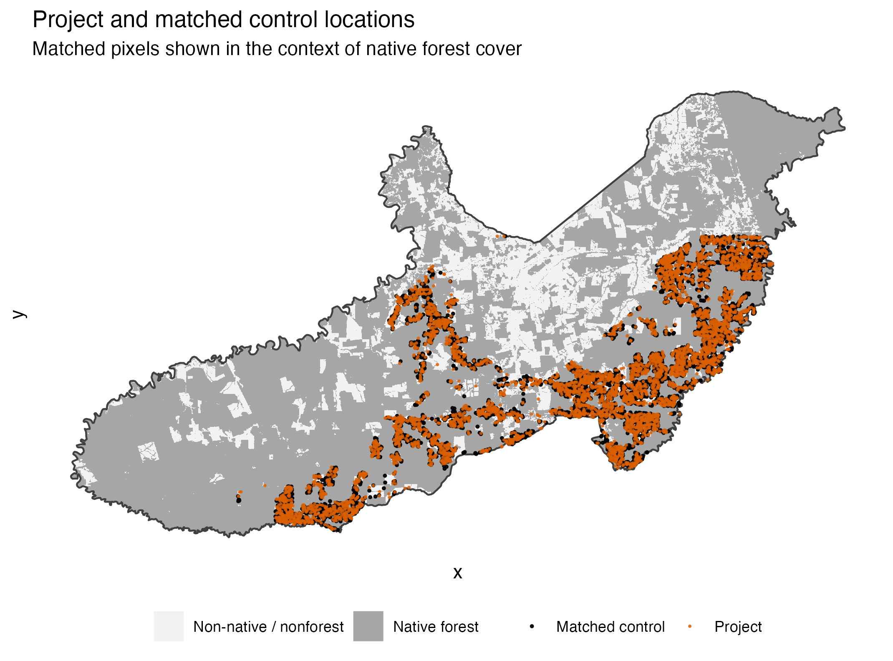
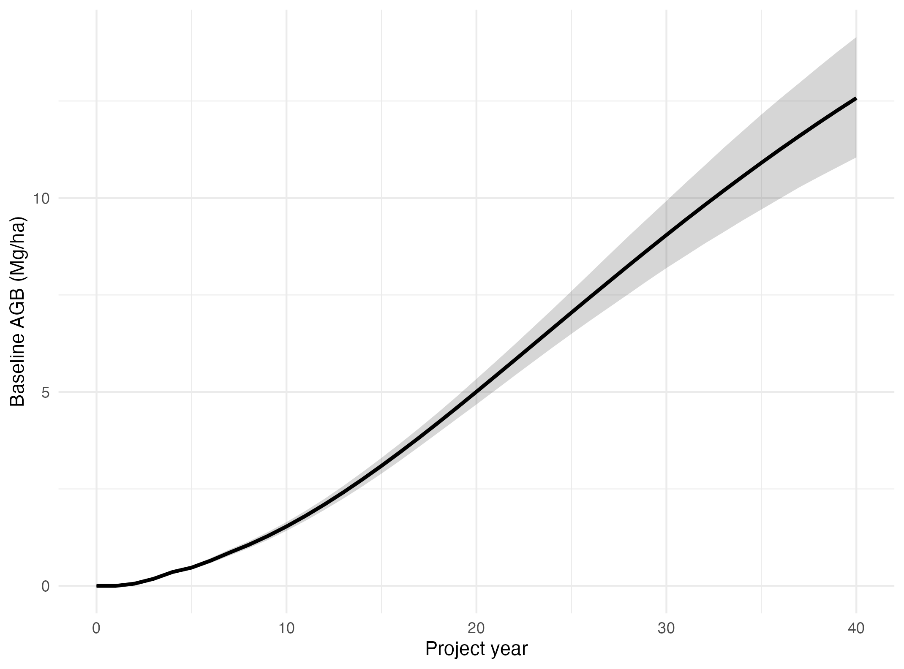
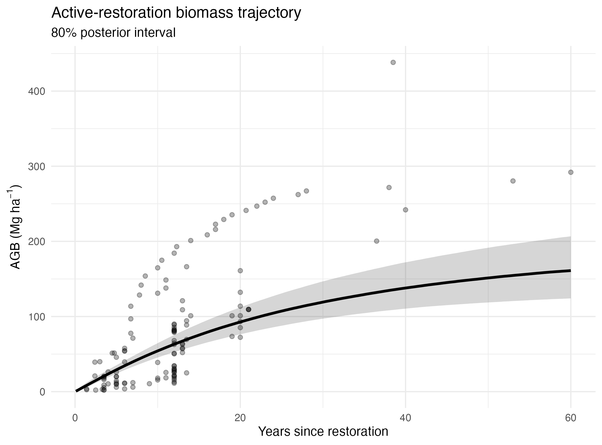
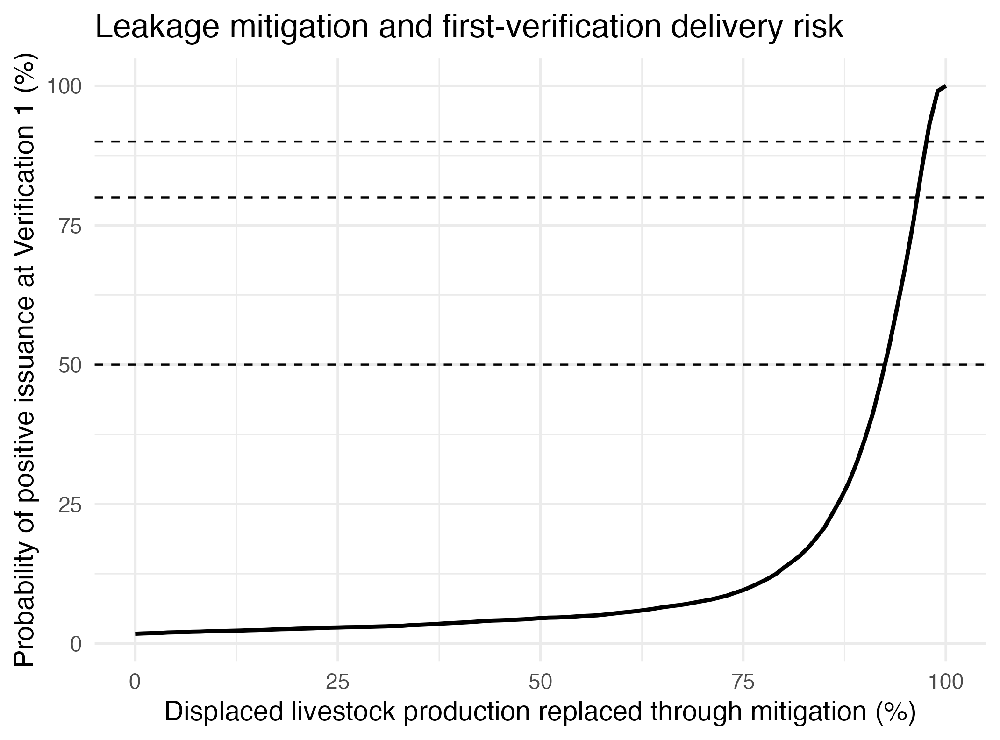
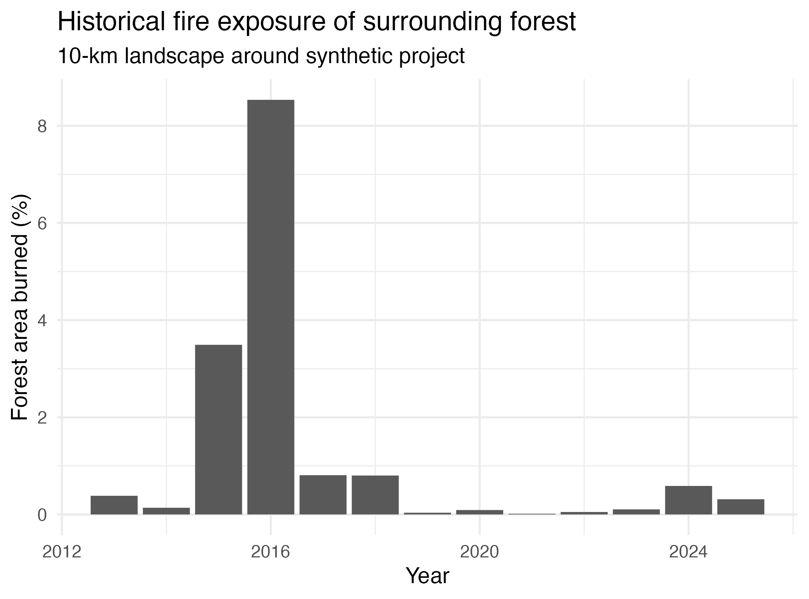
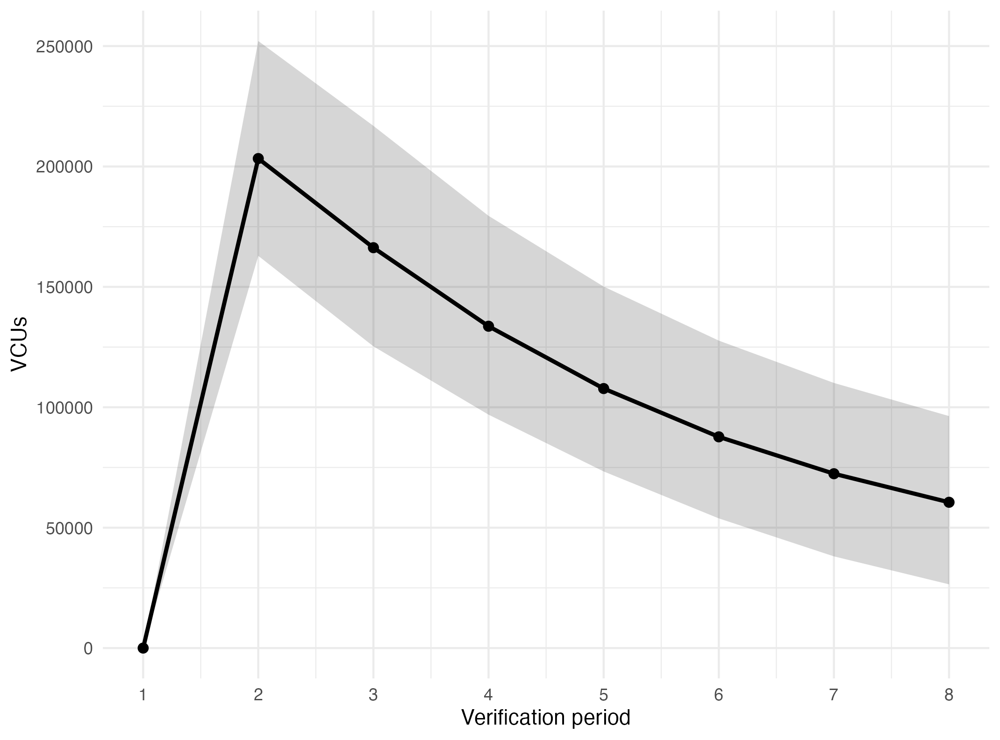
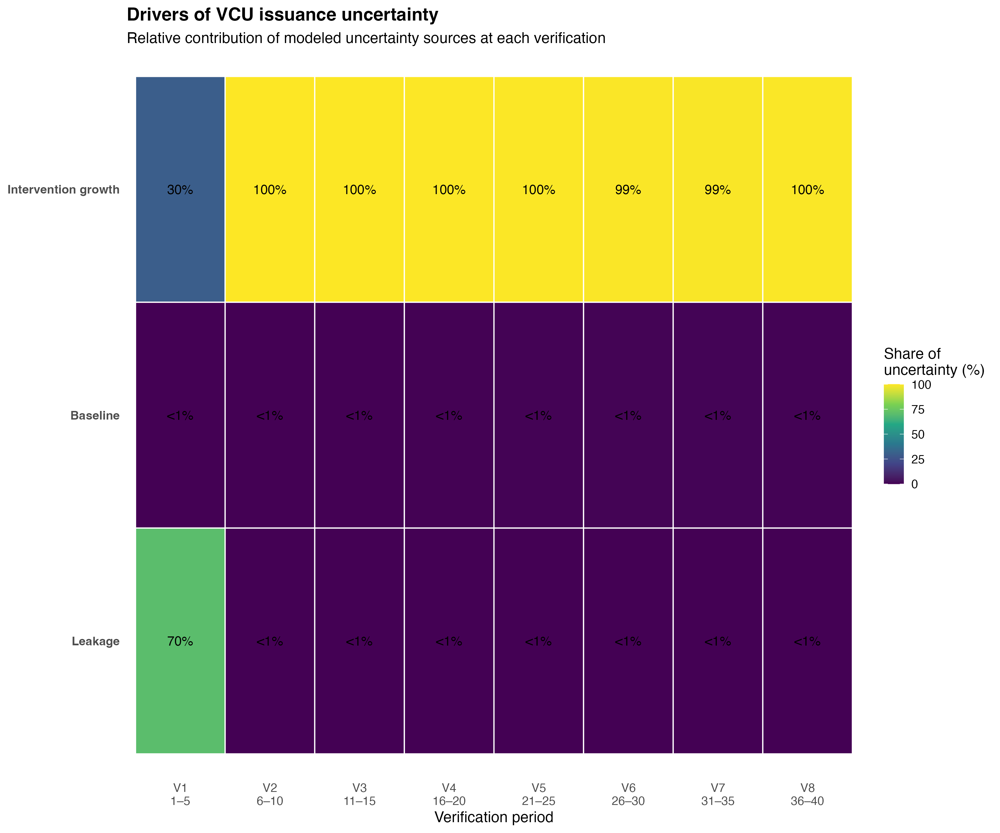

Restoration carbon delivery in Paragominas, Brazil.
A 5,000-ha forest restoration project evaluated from baseline through issuance, showing how growth, natural regeneration, livestock displacement, uncertainty, and permanence combine to determine investable carbon delivery.
Start with the landscape, not the credit forecast.
The objective is not simply to estimate how much forest can grow. It is to understand how much additional, saleable carbon the project can credibly deliver.
The project is designed as assisted natural regeneration and enrichment planting on degraded pasture. Restoration is phased across five 1,000-ha cohorts, with one cohort initiated annually during the first five project years. Carbon delivery is evaluated over a 40-year horizon with verification every five years.
Because the project is in its early stages, it does not yet have a defined project boundary. We therefore constructed a project footprint from persistent pasture in Paragominas, focusing on areas where natural regeneration is ecologically plausible and where a matched-control baseline can be built from comparable non-project pasture.

The underwriting question
How many credits could this project reasonably deliver, how uncertain is that delivery, and which biological and project-design assumptions create the greatest risk?
Natural regeneration makes the counterfactual dynamic.
A restoration project's carbon benefit is the difference between project carbon stocks and the carbon stocks that would have occurred without the intervention.
We matched the project footprint to comparable non-project pasture using pre-intervention landscape characteristics, including surrounding forest cover and distance to forest. The matching design uses 2013–2018 as the pre-project period and reserves 2019–2025 to observe subsequent behavior of the matched controls.
Land-cover trajectories for matched controls were reconstructed annually using MapBiomas Collection 11. When control pixels transitioned into natural vegetation, biomass accumulation was assigned using a locally informed unmanaged-regeneration curve. The observed matched-control biomass trajectory was used through 2025, and subsequent baseline biomass was projected forward from that observed endpoint.
Baseline uncertainty was propagated rather than treating the counterfactual as known. Whole matched-control trajectories were resampled to capture uncertainty in observed behavior, while uncertainty in future unmanaged regeneration was propagated through the post-2025 projection.

A zero baseline would overstate additionality.
Some non-project pasture regenerates naturally. That biomass belongs in the counterfactual, not in project additionality.
Growth is modeled as a distribution, not a single curve.
The largest biological input to an ex-ante restoration model is the expected trajectory of forest biomass recovery.
Rather than selecting a single literature growth rate, we assembled active-restoration biomass observations from the Mores et al. systematic-review dataset and fit alternative nonlinear Bayesian recovery models. The final model uses a Gamma likelihood and allows attainable biomass and growth rates to vary among studies while constraining recovery to biologically plausible tropical-forest trajectories.
Posterior growth trajectories are propagated through the five restoration cohorts rather than applying the same forest age to the entire project. At any project year, the project therefore represents a mix of restoration ages.

Survival remains a separate delivery risk.
Survival is material, particularly for enrichment planting, but it is not independently parameterized in the current model. The literature biomass data reflect realized stand development, but that is not equivalent to explicitly modeling establishment probability or seedling survival.
For an investment-grade application, establishment, early survival, and subsequent stand growth should be separated using project monitoring data as they become available. In this analysis, survival is therefore treated as an identified but unquantified delivery risk rather than assigned an unsupported assumption.
From biomass to gross removals
Project biomass is converted from aboveground to belowground biomass using a locally informed root:shoot relationship, then converted to carbon and CO₂ equivalents. Gross additional removals are calculated from project carbon minus baseline carbon for every Monte Carlo draw, preserving uncertainty in both intervention growth and baseline recovery.
Leakage changes the project from viable to constrained.
This is the most consequential result of the analysis.
Restoring productive pasture can displace livestock production. Under VMD0054, that displaced production can generate leakage if equivalent production shifts to other land and causes carbon-stock loss.
We modeled the project as ten farms and estimated displaced livestock production using stocking rates observed on farms in Paragominas. Leakage was translated into the land area required to accommodate that production elsewhere, accounting for the applicable VMD0054 displacement factors and receiving-land productivity.
Under the no-mitigation case, leakage is substantially larger than first-verification gross removals. A project that appears viable when evaluated only from forest growth becomes effectively non-viable once livestock displacement is incorporated.
We therefore tested production-replacement scenarios from no mitigation to full replacement. Mitigation was represented as pasture intensification capable of maintaining livestock production on a smaller land base, including fertilizer-related N₂O and diesel emissions rather than treating intensification as emissions-free.

This is a project-design constraint, not a modeling detail.
The useful development question is not simply how quickly 5,000 hectares can be restored. It is how much pasture can be restored while credibly maintaining the production currently supported by that land.
Modeled uncertainty and accounting deductions are different things.
The model propagates uncertainty through the quantities that are actually uncertain rather than placing a blanket range around the final estimate.
Intervention biomass is represented by posterior draws from the Bayesian growth model. Baseline uncertainty incorporates resampling of matched-control trajectories and uncertainty in subsequent unmanaged regeneration. Leakage incorporates variation in local stocking rates, receiving-land productivity, and forest carbon stocks.
These uncertainties propagate through additionality and ultimately into potential VCU delivery. A 10% ex-ante uncertainty deduction is then applied in the issuance accounting. The deduction is an accounting adjustment; it is not the same as the model's distribution of possible project outcomes.
Uncertainty should be decision-useful.
A confidence interval alone says the forecast is uncertain. A delivery-risk model should also show what drives that uncertainty and what evidence or project action could reduce it.
Fire is a reversal risk, not an annual growth haircut.
Credited forest carbon remains exposed after issuance, so permanence risk must be treated separately from expected growth.
Fire risk was evaluated using historical burned-area observations in the surrounding forest landscape. The empirical record indicates a mean annual forest area burned of approximately 1.18%, while the median is substantially lower at approximately 0.31%, indicating a strongly right-skewed fire regime.

Rather than subtracting expected fire losses directly from annual issuance, fire is treated as a non-permanence risk relevant to the AFOLU buffer. The project uses a central 13% buffer assumption, with 12% and 18% examined as sensitivity cases.
Growth risk and reversal risk should not be conflated.
Growth determines how much carbon is generated. Fire determines the risk that credited carbon is later reversed.
Investable delivery is smaller than ecological potential.
The final issuance model combines gross additional removals, the uncertainty deduction, leakage, and the non-permanence buffer.
Gross additional removals are reduced by the uncertainty deduction and leakage to obtain issuable removals before buffer. The remaining issuable removals are then reduced by the buffer withholding to estimate saleable VCUs.
Under the unmitigated leakage case, Verification 1 is effectively lost because expected livestock-displacement leakage exceeds the carbon generated during the first five years. Later verification periods perform better as forest biomass continues accumulating after the major displacement event.

Carbon potential and carbon delivery are not the same thing.
A project can have strong ecological growth potential while still having weak delivery economics if baseline behavior, leakage, or permanence are not addressed during project design.
Different risks dominate at different stages.
The final analysis asks which modeled sources actually drive uncertainty in VCU delivery.
Each major stochastic source was held fixed in turn and the resulting reduction in issuance variance was calculated. The heatmap translates a wide forecast distribution into a more practical question: what would we need to learn or change to reduce delivery uncertainty?

| Risk | Why it matters | Practical mitigation |
|---|---|---|
| Leakage | Can eliminate early issuance entirely. | Reduce enrolled productive pasture; intensify production on retained land; target lower-productivity pasture; integrate mitigation before enrollment. |
| Intervention growth | Controls the magnitude and timing of removals. | Establish permanent plots, collect early DBH/height data, and update the Bayesian growth model as project observations accumulate. |
| Survival / establishment | Could systematically reduce realized growth and is not yet modeled separately. | Measure cohort survival, define replanting triggers, and explicitly model establishment probability. |
| Baseline | Natural regeneration reduces additionality. | Maintain high-quality matched controls, improve ecological matching variables, and update the baseline with observed control performance. |
| Fire / permanence | Threatens credited carbon after issuance. | Fire breaks, fuel management, rapid detection and response, and community fire management. |
| Buffer | Reduces saleable rather than physical carbon. | Reduce demonstrable internal and natural risks where project actions can support lower residual risk. |
Ex-ante modeling should change project decisions before it predicts credits.
Early in development, leakage is primarily a project-design problem. During establishment, survival and growth become biological performance problems. As the project matures, baseline performance and permanence become increasingly important to long-term delivery.
The value of the model is not merely forecasting a number of credits. It is identifying which assumptions determine whether those credits are likely to exist—and which of those assumptions the developer can still change.